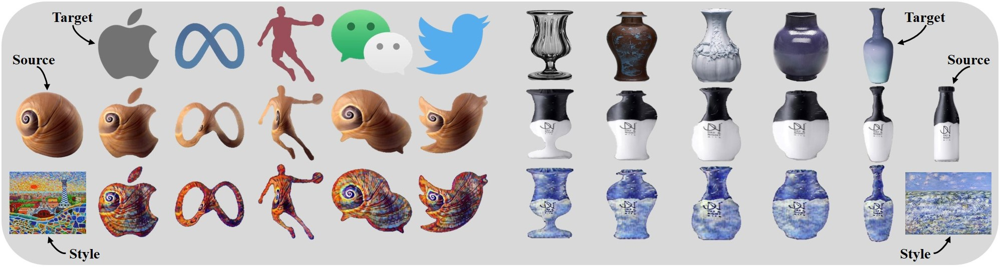
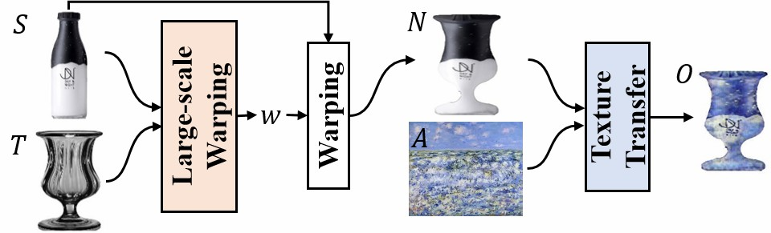
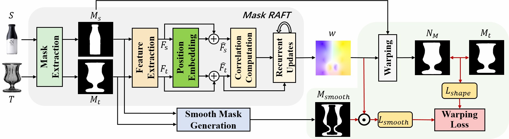
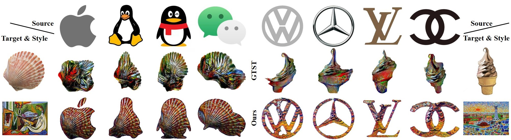

* Contributes equally, † Corresponding author&project lead

We propose an Industrial Style Transfer method for visual product design. Our method creates new product appearances (e.g., logos and Day&Night bottles) by transferring both the shape of one product (target) and art style reference to another (source).
Abstract
We propose a novel style transfer method to quickly create a new visual product with a nice appearance for industrial designers’ reference. Given a source product, a target product, and an art style image, our method produces a neural warping field that warps the source shape to imitate the geometric style of the target and a neural texture transformation network that transfers the artistic style to the warped source product. Our model, Industrial Style Transfer (InST), consists of large-scale geometric warping (LGW) and interest-consistency texture transfer (ICTT). LGW aims to explore an unsupervised transformation between the shape masks of the source and target products for fitting large-scale shape warping. Furthermore, we introduce a mask smoothness regularization term to prevent the abrupt changes of the details of the source product. ICTT introduces an interest regularization term to maintain important contents of the warped product when it is stylized by using the art style image. Extensive experimental results demonstrate that InST achieves state-of-the-art performance on multiple visual product design tasks, e.g., companies' snail logos, classical bottles, flying cars, and porcelain fashions. To the best of our knowledge, we are the first to extend the neural style transfer method to create industrial product appearances.
Method Overview
The pipeline of our InST
Large-scale geometric warping module
Interest-consistency texture transfer module

Results
Visual product design results using the geometric style transfer methods

Content preservation results using the texture style transfer methods

Visual logo design results
Visual product design results

Paper
Industrial Style Transfer with Large-scale Geometric Warping and Content Preservation
Jinchao Yang, Fei Guo, Shuo Chen, Jun Li, and Jian Yang
In CVPR, 2022
@InProceedings{jcyang2022InST,
title = {Industrial Style Transfer with Large-scale Geometric Warping and Content Preservation},
author = {Jinchao Yang and Fei Guo and Shuo Chen and Jun Li and Jian Yang},
booktitle = {CVPR},
year = {2022},
}Acknowledgements
The webpage template was adapted from Richard Zhang's and Jason Zhang's templates.